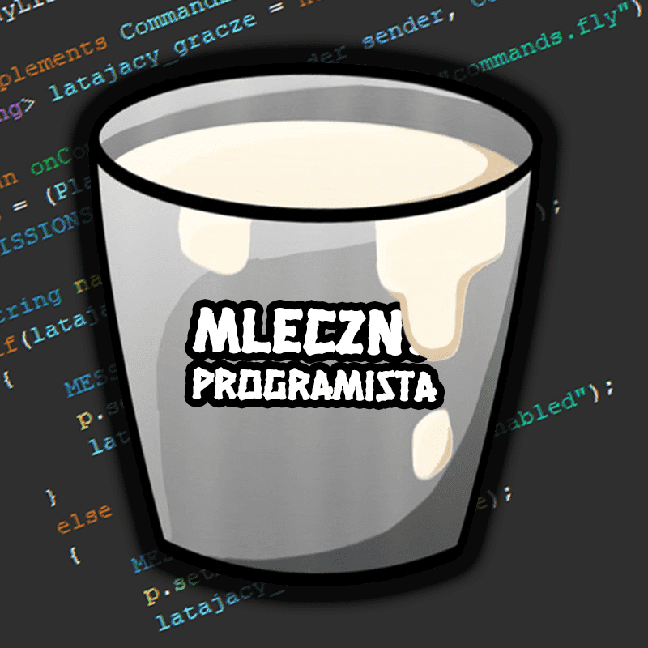

AktualizacjeZobacz co zostało zmienione i co zostanie dodane na Nowości |
|
Zanim przejdziesz dalej...Jeśli interesujesz się programowaniem i tworzeniem serwerów Minecraft, to na naszej stronie znajdziesz wiele przydatnych materiałów. W zakładce Filmy znajdziesz poradniki wideo, które pomogą Ci w tworzeniu własnego serwera. W zakładce Pluginy znajdziesz wiele ciekawych pluginów Minecraft, które możesz wykorzystać na swoim serwerze. Natomiast w zakładce Konfiguracje znajdziesz zarówno płatne, jak i darmowe konfiguracje serwerów Minecraft. Zachęcamy do zapoznania się z naszymi materiałami i rozwijania swoich umiejętności w dziedzinie tworzenia serwerów Minecraft. Jeszcze na koniec zapraszamy na nasz serwer Discord na którym znajdziesz przydatne materiały oraz z nami porozmawiasz ;) |
|
|  | Jeszcze jedno...Jeżeli chcesz wypromować swój plugin Minecraft, paczkę pluginów do Minecraft lub inne rzeczy, to możesz napisać do nas na Discordzie lub Mailu a my ci pomożemy go wypromować! Pomożemy Ci też w promowaniu twojego kanału YouTube który jest poświęcony Minecraftowi. |